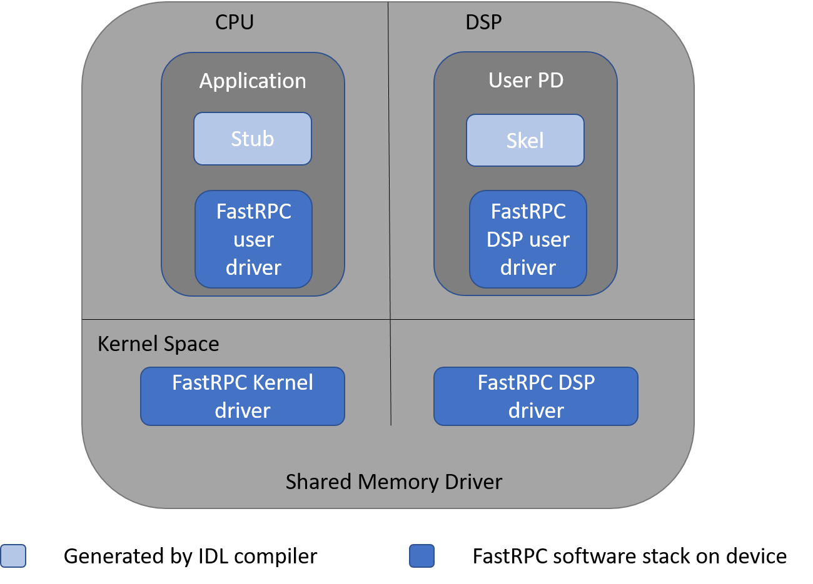
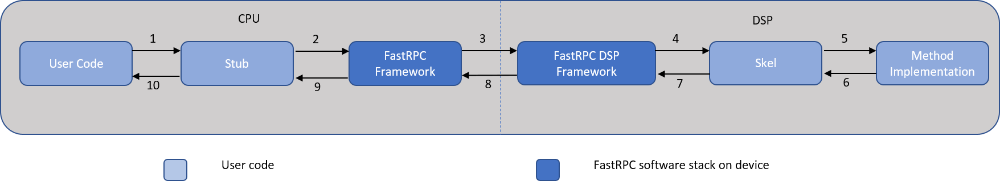
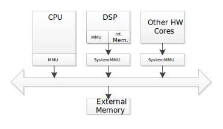
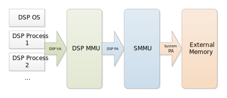

RPC
A Remote Procedure Call (RPC) allows a computer program calling a procedure to execute in another remote processor, while hiding the details of the remote interaction. FastRPC is the RPC mechanism used to enable remote function calls between the CPU and DSP.
Customers with algorithms that benefit from being executed on the DSP can use the FastRPC framework to offload large processing tasks onto the DSP. The DSP can then leverage its internal processing resources, such as HVX, to execute the tasks in a more compute- and power-efficient way than the CPU.
FastRPC interfaces are defined in an IDL file, and they are compiled using the QAIC compiler to generate header files and stub and skel code. The header files and stub should be built and linked into the CPU executable while the header files and skel should be built and linked into the DSP library.
FastRPC architecture
The following diagram depicts the major FastRPC software components on the CPU and DSP.

Definition of the terms in the diagram:
| Term | Description |
|---|---|
| Application | User mode process that initiates the remote invocation |
| Stub | Auto-generated code that takes care of marshaling parameters and runs on the CPU |
| FastRPC user driver on CPU | User mode library that is used by the stub code to do remote invocations |
| FastRPC Kernel Driver | Receives the remote invocations from the client, queues them up with the FastRPC DSP driver, and then waits for the response after signaling the remote side |
| FastRPC DSP Driver | Dequeues the messages sent by the FastRPC kernel driver and dispatches them for processing |
| FastRPC user driver on DSP | User mode code that includes a shell executable to run in the user protection domain (PD) on the DSP and complete the remote invocations to the skel library |
| Skel | Auto-generated code that un-marshals parameters and invokes the user-defined implementation of the function that runs on the DSP |
| User PD | User protection domain on the DSP that provides the environment to run the user code |
FastRPC workflow
The FastRPC framework is a typical proxy pattern. The interface object stub and the implementation skeleton objects are on different processors. FastRPC clients are directly exposed to the stub object, and the skeleton object is called by the FastRPC framework on the DSP.
The FastRPC framework consists of the following components.

Workflow:
- The CPU process calls the stub version of the function. The stub code converts the function call to an RPC message.
- The stub code internally invokes the FastRPC framework on the CPU to queue the converted message.
- The FastRPC framework on the CPU sends the queued message to the FastRPC DSP framework on the DSP.
- The FastRPC DSP framework on the DSP dispatches the call to the relevant skeleton code.
- The skeleton code un-marshals the parameters and calls the method implementation.
- The skeleton code waits for the implementation to finish processing, and, in turn, marshals the return value and any other output arguments into the return message.
- The skeleton code calls the FastRPC DSP framework to queue the return message to be transmitted to the CPU.
- The FastRPC DSP framework on the DSP sends the return message back to the FastRPC framework on the CPU.
- The FastRPC framework identifies the waiting stub code and dispatches the return value.
- The stub code un-marshals the return message and sends it to the calling User mode process.
Android software components
The FastRPC framework consists of several libraries in the system and vendor partitions of the Android image.
| Software component | Description |
|---|---|
/system/vendor/lib/lib*rpc.so or /vendor/lib/lib*rpc.so, where * is adsp, cdsp, or sdsp |
Shared object library to be linked with the user-space vendor application that is invoking the remote procedure call. This library interfaces with the kernel driver to initiate the remote invocation to the aDSP, cDSP, or sDSP. |
/system/lib/lib*rpc_system.so, where * is adsp, cdsp, or sdsp |
Shared object library that is to be linked with the user-space system application that is invoking the remote procedure call. This library interfaces with the kernel driver to initiate the remote invocation to the aDSP, cDSP, or sDSP. This library is applicable for system applications on Android P and onwards. |
NOTE: The /system/vendor path is only supported on Android O.
DSP protection domains
Because the DSP is a real-time processor whose stability critically affects the overall user experience, different PDs exist in the DSP software architecture. These PDs ensure the stability of the kernel software and the safety of Qualcomm proprietary hardware information. There are various protection domains in the DSP.
- Kernel: Access to all memory of all PDs
- Guest OS: Access to the memory of its own PD, the memory of the user PD, and some system registers
- User: Access only to the memory of its own PD
DSP system libraries make system calls to the Guest OS or Kernel as appropriate to access operating system services. FastRPC client programs run in user PDs.
Dynamic vs static PD
User PDs can be created statically at boot time, but they are more often created dynamically at run time by CPU applications that are to offload modules to the DSP. Both static and dynamic PDs support dynamic loading of shared objects.
Static PD
Static PDs are created on DSPs to support specific use cases like Audio and Sensors. The static PDs allow the dynamic loading of shared objects with the help of a daemon running on the CPU. For more details, see Dynamic loading.
Dynamic user PD
Every CPU user process that uses a DSP via FastRPC will have a corresponding dynamic user PD on the DSP. The FastRPC Kernel driver manages the life cycle of the dynamic user PD. That is, if the CPU user process exits, the corresponding user PD on the DSP is cleaned up as well.
The DSP supports different types of dynamic user PD environments, including signed and unsigned PDs.
Each DSP can only support a limited number of concurrent dynamic user PDs. This limit depends on the hardware configuration for each supported chip and DSP; see the feature matrix.
Signed and unsigned PDs
DSPs support different types of dynamic execution environments (dynamic PDs) including signed and unsigned PDs.
Signed PDs are available on all the DSPs, and they require that the modules (shared objects) being loaded in the PD are signed with a digital signature. This signature must be verified at the time of loading the shared objects in the PD. For details on signing a shared object, see Signing.
On the other hand, unsigned PDs are only supported in the cDSP, and they allow the DSP modules to load without any digital signatures.
An unsigned PD is a sandboxed low-rights process that allows the signature-free modules to run on the cDSP. In the event of a compromise, access to full system functionality and data is prevented by the sandbox. Unsigned PDs are designed to support general compute applications and have limited access to underlying drivers (see the following sections for available services and limitations). The available/unavailable services in the unsigned PD may change in the future, depending on continuing security reviews.
Unsigned PD support
To check whether a device supports unsigned PDs, perform a capability query using the DSP attribute, UNSIGNED_PD_SUPPORT. For an example on how to make this query, see the calculator example.
Unsigned PD available services
- Thread creation and thread services
- HVX contexts
- Clock frequency controls
- VTCM
- Cache operations
- Map HLOS memory allocated by the corresponding HLOS application
Unsigned PD limitations
- Access to limited drivers: UBWCDMA and Camera Streamer are not available to unsigned PDs
- QuRT timer APIs are not available. Applications can use
qurt_signal_wait_timed(),qurt_thread_sleep()and related APIs instead. See the QuRT user guide for more information. - No access to L2 cache locking APIs
- Thread limitations
- Thread priority ceiling (highest priority for any unsigned PD thread): 64. Note that this limitation is no longer applicable on Lahaina and later targets. Instead the priority limit applies to unprivileged clients, whether they use signed or unsigned PDs; privileged clients have no such limit.
- Maximum number of threads allowed per unsigned PD: 128
NOTE: These limitations might change in the future.
Request signature-free offload
To request a signature-free dynamic module offload, clients make the request as follows:
#pragma weak remote_session_control
if (remote_session_control)
{
struct remote_rpc_control_unsigned_module data;
data.enable = 1;
data.domain = CDSP_DOMAIN_ID;
remote_session_control(DSPRPC_CONTROL_UNSIGNED_MODULE, (void*)&data, sizeof(data));
}
This request must be made before calling any other FastRPC function.
A success message from the remote_session_control() function allows the client to offload the dynamic shared object to the cDSP without signing.
IDL Compiler
Interfaces for the DSP platform and all FastRPC programs are described in a language called IDL. IDL allows interface authors to expose only what that object does, but not where it resides or the programming language in which it is implemented. IDL provides flexibility of software implementation while maintaining a consistent interface for the software module. Following is a typical IDL header file.
#include "AEEStdDef.idl"
#include "remote.idl"
interface calculator : remote_handle64 {
long sum(in sequence<long> vec, rout long long res);
long max(in sequence<long> vec, rout long res);
};
When using the function parameters:
- Indicate input parameters as
in. - Indicate parameters to be modified as output as
rout.
For more information on the concept and use of the IDL compiler, see the IDL reference page.
For information on how to define the interface, generate the stub and skel, and link and test the application, see the calculator example.
Multi-domain
Snapdragon products include multiple Hexagon DSPs (for example, cDSP, aDSP, mDSP, or sDSP). On many targets, more than one of these domains is available to FastRPC CPU user processes.
A domain is a remote environment (DSP) for loading and executing code. Linking the CPU user process to the FastRPC user library for a specific DSP (like libcdsprpc.so for the cDSP) allows the CPU user process to offload to the cDSP only. To offload modules to multiple domains from the same CPU user process, use the multi-domain feature.
The multi-domain framework provides the following benefits over the single domain framework:
- The CPU user process does not need to choose which DSP to use at link time. Instead, it can link to
libadsprpc.soand specify the domain later at runtime. - The CPU user process can query the target for its domain capabilities and select the domain with the required capabilities.
- The CPU user process can open multiple concurrent sessions on different DSPs.
- The multi-domain session is handle-based, allowing the CPU user process to restart a crashed DSP session by closing the handle using
interface_close ()and reopening a new handle. Upon closing the handle, the framework calls the user-written deinitialization function, which allows you to clean up any resource being used. (This process is referred to as session restart or PD restart.) - The handle for a session is passed to each interface API and can easily be associated to user-defined context stored in the DSP memory. This allows an application to easily access data that is persistent across FastRPC calls.
To see how to use multi-domain feature, see the calculator example.
FastRPC threads and processes
A separate user PD is created on the DSP for each HLOS user process that runs on the CPU and establishes a FastRPC session with the DSP.
- Each user process or thread on the CPU has a corresponding user PD or thread on the DSP.
- The user PD on DSP is created when the device is opened on the CPU, and it is destroyed when the device is closed on the CPU.
- A shell executable is loaded on the DSP when a user PD on the DSP is spawned.
- When an RPC message is invoked from a CPU thread and no corresponding thread exists on the DSP, the required thread is created on the DSP.
- The threads are destroyed when the corresponding CPU thread exits.
The CPU user process can use the remote_session_control API that allows clients to configure the stack size and priority of all threads in their user PD on the DSP.
Clients can use the following API and data structure (exposed in the remote.h header) to configure their DSP thread parameters:
struct remote_rpc_thread_params {
int domain;
int prio;
int stack_size;
};
Handling exceptions
SSR
The DSP subsystem enters a SubSystem Restart (SSR) state and FastRPC returns AEE_ECONNRESET when a non-recoverable exception occurs:
- in a kernel of the DSP subsystem
- in a critical process. A process can be spawned as critical by setting a debug attribute as follows from the terminal window each time before launching the application: adb shell setprop vendor.fastrpc.process.attrs 1
PD restart
The following PDs have the capability to be restarted without disrupting other user PDs running on the same subsystem. The new PD will be spawned for the same HLOS process that was used before.
- Static PDs on the audio and sensor domains, which all support Protection Domain Restart (PDR)
- Dynamic user PDs on the cDSP, which all have their own user space handles
When a user PD on the cDSP incurs a non-recoverable exception, FastRPC returns either
AEE_ENOSUCHorAEE_EBADSTATE + DSP_OFFSET. These error codes allow the client to take an appropriate action. An example of code catching these errors and restarting the session is illustrated incalculator_test.cas part of the calculator example.
Restrictions
- This API must be called before making any other RPC call from your CPU process: this call must be the first call from your application.
- The thread stack size is to be between 16 KB and 8 MB.
- The DSP thread priority must be between 1 and 254 (with 1 being the highest).
- We do not recommend using priority 255, because you be preempted by interrupts even if other threads are idle. 255 is basically treated as the idle priority.
- On SM8250 devices, the unsigned PDs are restricted to a maximum thread priority of 64.
- On SM8350 and later devices, all unprivileged PDs are restricted to a maximum thread priority of 64. For details, see system integration page.
- Currently, we do not support individual thread configuration. That is, if you update the thread priority and stack size once, the same parameters will be used for all the FastRPC threads in that DSP user PD.
- After the first RPC call is made, the FastRPC thread parameters cannot be updated again, and they will persist for the lifetime of the DSP process.
- You can always spawn worker threads anytime from the DSP with different stack sizes and priorities.
Example
Set the priority to 100 and the stack size to 4 MB on the cDSP:
#include "remote.h"
...
main() {
struct remote_rpc_thread_params th_data;
th_data.domain = CDSP_DOMAIN_ID;
th_data.stack_size = 4*1024*1024;
th_data.prio = 100;
nErr = remote_session_control(FASTRPC_THREAD_PARAMS, (void*)&th_data, sizeof(th_data));
if (nErr) {
printf("ERROR 0x%x: remote_session_control failed to set thread params\n", nErr);
} else {
printf(" - Successfully set CDSP user process thread parameter(s)\n");
}
....
my_first_RPC_call();
}
Status notifications of DSP User process
In targets after LAHAINA, the CPU user process can use the remote_session_control API that allows clients to register for the status notifications of the DSP User process. Clients can use this API and following data structure (exposed in the remote.h header) to register for status notifications of DSP user process.
typedef struct remote_rpc_notif_register {
void *context;
int domain;
fastrpc_notif_fn_t notifier_fn;
} remote_rpc_notif_register_t;
Following notifications are supported for DSP User process.
// DSP User PD status notification flags
typedef enum remote_rpc_status_flags {
/* DSP user process is up */
FASTRPC_USER_PD_UP = 0,
/* DSP user process exited */
FASTRPC_USER_PD_EXIT = 1,
/* DSP user process forcefully killed. Happens when DSP resources needs to be freed. */
FASTRPC_USER_PD_FORCE_KILL = 2,
/* Exception in the user process of DSP. */
FASTRPC_USER_PD_EXCEPTION = 3,
/* Subsystem restart of the DSP, where user process is running. */
FASTRPC_DSP_SSR = 4,
} remote_rpc_status_flags_t;
Example
Register for Status notifications of DSP User process.
#include "remote.h"
...
int fastrpc_notif_dsp(void *context, int domain, int session, remote_rpc_status_flags_t status) {
...
}
...
main() {
struct remote_rpc_notif_register status_notif;
status_notif.context = (void *)<NOTIF_CONTEXT>;
status_notif.domain = domain;
status_notif.notifier_fn = fastrpc_notif_dsp;
nErr = remote_session_control(FASTRPC_REGISTER_STATUS_NOTIFICATIONS, (void*)&status_notif, sizeof(status_notif));
if (nErr) {
printf("ERROR 0x%x: remote_session_control failed to register for status notifications of DSP process\n", nErr);
} else {
printf(" - Successfully registered for status notifications of DSP process \n");
}
....
my_RPC_call();
}
Asynchronous FastRPC
FastRPC is a remote procedure call framework for CPU clients to efficiently offload tasks to the DSP. FastRPC is synchronous by default: the caller thread on the CPU is blocked until the remote method execution on the DSP completes and returns with a result. This prevents the same client thread from doing additional processing while remote call in progress. Asynchronous FastRPC allows the caller to continue while the remote call is still ongoing.
An asynchronous FastRPC call is queued to the DSP thread while control returns immediately to the calling thread with a job ID. The caller gets notified later when the call completes. The caller must process the notification and release the job.
Refer to example in $HEXAGON_SDK_ROOT/addons/compute/docs/docs/examples/benchmark/README.md, to understand how to use async support.
IDL async support
Please refer to the IDL documentation for more details on how to declare an asynchronous FastRPC function.
Async Descriptor
A FastRPC async descriptor is made of a of notification type, job ID and callback:
struct fastrpc_async_descriptor {
enum fastrpc_async_notify_type type; /**< asynchronous notification type */
fastrpc_async_jobid jobid; /**< jobid returned in async remote invocation call */
union {
struct fastrpc_async_callback cb; /**< call back function filled by user */
}
} fastrpc_async_descriptor_t;
fastrpc_async_notify_type is used to notify the caller of an async FastRPC call completion, notifications are one of the following types:
- Callback notification
- User poll for job completion
- No notification required
fastrpc_async_notify_type is defined in remote.h:
enum fastrpc_async_notify_type{
FASTRPC_ASYNC_NO_SYNC = 0, /**< No notification asynchronous call*/
FASTRPC_ASYNC_CALLBACK, /**< asynchronous call with response with call back */
FASTRPC_ASYNC_POLL, /**< asynchronous call with polling */
FASTRPC_ASYNC_TYPE_MAX, /**< reserved */
};
A client making an asynchronous FastRPC is responsible for initializing the async descriptor with the required type of notification and pass it as an argument to the stub method. An async call will return 0 on successful submission of the job to the DSP and update jobid field in the async descriptor. Async call will return non-zero value (error code) in case of failure to submit the job.
fastrpc_async_callback is made of a function pointer to the callback function and a context pointer:
typedef struct fastrpc_async_callback {
void (*fn)(fastrpc_async_jobid jobid, void* context, int result);/**< call back function */
void *context; /**< unique context filled by user*/
}fastrpc_async_callback_t;
Notification declaration
-
Callback notification: User needs to put the callback function in the descriptor
struct fastrpc_async_descriptor desc; desc.type = FASTRPC_ASYNC_CALLBACK; desc.cb.fn= fn; desc.cb.context = ptr;Async call completion is notified to user with a callback function shared in the descriptor. User shall process the notification and release the jobid. Release function can be called within a callback function also. One worker thread is used for notifying all async jobs. Hence it is recommended to keep processing inside a callback function to a minimum.
void foo_async_callback(fastrpc_async_jobid job_id, void* context, int result) { /* Callback function for jobid */ /* Release jobid */ } -
User poll for job completion: User needs to use
FASTRPC_ASYNC_POLLfor notify_typestruct fastrpc_async_descriptor desc; desc.type = FASTRPC_ASYNC_POLL;The FastRPC library does not notify call completion to user for the jobs submitted with
FASTRPC_ASYNC_POLLtype. Instead, the user needs to poll for the status of the job usingfastrpc_async_get_statusfunction and release jobid after its use. Blocking poll and non-blocking poll with timeout are supported.The
fastrpc_async_get_statusfunction returns 0 on completion of the job. Actual return value (success/error/return value) of the remote call will be updated in&resultif the job status is completed./* Get current status of an async call with jobid. * * @param jobid, jobid returned in descriptor during successfull async call * @param timeout_us, timeout in micro seconds * timeout = 0, returns immediately with status/result * timeout > 0, wait for completion with timeout in micro-sec * timeout < 0. wait indefinitely. Block thread until job completion. * @param result, integer pointer for the result of the job * 0 on success * error code on failure * @retval, 0 on job completion and result of job is part of @param result * AEE_EBUSY, if job status is pending and is not returned from the DSP * AEE_EBADPARM, if job id is invalid * AEE_EFAILED, FastRPC internal error */ int fastrpc_async_get_status(fastrpc_async_jobid jobid, int timeout_us, int *result); -
No notification required: User needs to use
FASTRPC_ASYNC_NO_SYNCfor notify_typestruct fastrpc_async_descriptor desc; desc.type = FASTRPC_ASYNC_NO_SYNC;In this mode, no notification are sent to user after completion of the job with the result of either success or failure. The FastRPC library will ignore the result and automatically release the jobid after completion. User is not required to book keep any of the data associated with this type of job after successful submission.
Release Async JobID
Client shall release jobid after receiving call completion notification with user poll or callback. The release allows the framework to clean internal states associated with the async jobid. AEE_PENDING will be returned if the release function called before the job completion.
/* Release Async job. Release async job after receiving status either through callback/poll
*
* @param jobid, jobid returned during Async job submission.
* @retval, 0 on success
* AEE_EBUSY, if job status is pending and is not yet returned from the DSP
* AEE_EBADPARM, if job id is invalid
*/
int fastrpc_release_async_job(fastrpc_async_jobid jobid);
NOTE: This function can be called within the callback function also
Remote File system
The DSP does not have its own file system, so it uses the CPU remote file system to read shared object files. Prebuilt shared objects and the FastRPC shell are present in the remote file system. Any client libraries that are to be loaded in the DSP user PD are also read by the FastRPC framework from the remote file system.
On Android builds, the remote file system is implicitly implemented by the user mode library: libadsprpc.so or libcdsprpc.so. It uses the calling process's context to open files.
Search path on remote file system
- On Android, the default file system search directory,
PATH, is/vendor/lib/rfsa/dsp;/vendor/dsp. - The optional environment variable,
DSP_LIBRARY_PATH, can be used to prepend a user-specified path to the default file system search directory. It contains a list of directories to search whendlopen("library")is called. - If multiple versions of a file are found in the DSP search path, it will choose the one found earliest in the search path.
- The FastRPC framework first searches in the domain of the path, and then it searches in the path directly, for all the paths that are part of
DSP_LIBRARY_PATH. If any shared objects are specific to a particular domain, they can be put under the domain directory of the search path. See examples below. - The SM8250 and later targets support the optional
DSP_LIBRARY_PATHenvironment variable. IfDSP_LIBRARY_PATHis not defined, the FastRPC framework looks for theADSP_LIBRARY_PATHenvironment variable. For older targets, it checks only for theADSP_LIBRARY_PATHenvironment variable. TheADSP_LIBRARY_PATHenvironment variable replaces the default path, whileDSP_LIBRARY_PATHprepends to the default search path. For more information onDSP_LIBRARY_PATH, see the next section.
Using DSP_LIBRARY_PATH
DSP_LIBRARY_PATH is a ; delimited variable used for specifying search paths on the remote file system. Use the following instructions to set the DSP_LIBRARY_PATH:
-
adb shell -
To set up a single directory for
DSP_LIBRARY_PATH:export DSP_LIBRARY_PATH = “foo” -
To set up multiple directories for
DSP_LIBRARY_PATH:export DSP_LIBRARY_PATH = “foo; bar” -
To set up multiple directories for
DSP_LIBRARY_PATH, including the current process directory:export DSP_LIBRARY_PATH = “; foo; bar”
NOTE: The client application can call setenv() to set this variable from within the program as well.
Default value
When DSP_LIBRARY_PATH is not set, a default value for the module directory is used. This value is specific to the CPU OS.
- On Android, the path is
/vendor/lib/rfsa/dsp;/vendor/dsp. - On Windows, the path is
c:\Program Files\Qualcomm\RFSA\aDSP. - On LE the, path is
/dsp;/usr/lib/rfsa/adsp.
Usage examples
-
Assumptions:
- The CPU user process is using the cDSP domain
- The default
DSP_LIBRARY_PATHis used
The following paths will be searched for the shared objects in this order:
/vendor/lib/rfsa/dsp/cdsp/ /vendor/lib/rfsa/dsp/ /vendor/dsp/cdsp/ /vendor/dsp/ -
Assumptions:
- The CPU user process is using the cDSP domain
DSP_LIBRARY_PATH= “foo;bar”
The following paths will be searched for the shared objects in this order:
foo/cdsp/ foo/ bar/cdsp/ bar/ /vendor/lib/rfsa/dsp/cdsp/ /vendor/lib/rfsa/dsp/ /vendor/dsp/cdsp/ /vendor/dsp/ -
Assumptions:
- The CPU user process is using the cDSP domain
DSP_LIBRARY_PATH= “;foo;bar”
The following paths will be searched for the shared objects in this order:
./cdsp/ ./ foo/cdsp/ foo/ bar/cdsp/ bar/ /vendor/lib/rfsa/dsp/cdsp/ /vendor/lib/rfsa/dsp/ /vendor/dsp/cdsp/ /vendor/dsp/
Dynamic loading
The Hexagon SDK provides the tools and services to create and execute custom code on the DSP via dynamic shared objects.
Dynamic shared objects allow for customization of the DSP image at runtime without the need to rebuild the DSP image. They also allow for DSP code to be added or removed based on runtime needs.
Dynamic shared objects are analogous to Linux SO and Windows DLL files. They are implemented as ELF files, and in the CPU file system, they exist as files that are loaded by the DSP via an interprocessor communication mechanism. Once loaded, all symbols publicly exported by the shared object can be referenced or called.
The creation of shared objects is supported by the Hexagon Tools. For more information about the structure and limitations of dynamic shared objects, see the Hexagon Application Binary Interface (ABI) User Guide.
Dynamic loading is supported as follows:
-
Within FastRPC invocation
- The FastRPC framework dynamically loads the necessary skel libraries and their dependencies from the remote file system when the first method is called from each interface. FastRPC will also create a new dynamic user PD on the DSP during the first invocation from an HLOS user process.
-
Outside FastRPC invocation
- Static code on the DSP can use
dlopen()to initiate shared object loading. In this case, vendor-side daemons are provided with the Android image to support the dynamic loading for specific domains. - This mechanism is used by the Audio and Sensor static code. The
/vendor/bin/adsprpcd(for Audio) and/vendor/bin/sdsprpcd(for Sensor) daemons on the CPU must be up and running to support dynamic loading in the static audio and sensor environment on the DSP.
- Static code on the DSP can use
Memory management
This section discusses the Hexagon DSP memory management model for FastRPC-based applications: the types of memory available, memory management hardware, and memory performance implications that you must be aware of.
Hardware overview
A typical Qualcomm Snapdragon SoC includes several processors and other hardware cores, all with access to the same external system memory. All such processors and cores, including the Hexagon DSP, access memory via one or more memory management units (MMUs). These MMUs control which parts of the memory the different cores and software running on them can access. The following diagram illustrates a simple example of the main CPU, a Hexagon DSP, and a third hardware core.

The Hexagon DSP, when implemented as a compute or application DSP, uses two different MMUs:
- An internal MMU inside the DSP, managed by the DSP operating system
- An external System MMU (SMMU) between the DSP and system buses and the external memory, managed by the application processor (CPU)
All accesses to external memory and hardware registers are via the SMMU. However, accesses to internal DSP memories (such as VTCM) and DSP subsystem registers are not via the SMMU.
By default, each processor and hardware core is isolated to its own memory space, and cannot access memory belonging to other cores. It is possible however to allocate and map shared memory to share data efficiently between multiple cores. For the Hexagon DSP this can be done with FastRPC APIs as discussed below.
MMUs and address spaces
The following diagram represents the three different address spaces on the Hexagon DSP that you should know about, and the MMUs used to translate between them.

Each process on the DSP runs in its own Virtual Address space (DSP VA). The DSP VA is managed by QuRT, the DSP RTOS, ensuring that different processes are isolated from each other and from the operating system itself. The Hexagon DSP uses a 32-bit virtual address space, limiting each process to 4 GB of address space. If a process attempts to access memory that is not mapped to the DSP MMU, the DSP-side process is killed with a page fault.
Memory accesses going out from the Hexagon DSP towards the system are in the DSP Physical Address space (DSP PA). This space is not the same as the overall SoC physical address space; rather, DSP PAs are used as input addresses to the SMMU, which translates them to system physical addresses. The SMMU is used for two purposes: to control what memory the DSP can access, and to give the DSP a contiguous view of physically non-contiguous buffers.
The SMMU is managed by the main application CPU. If the DSP attempts to access memory that is not mapped to the SMMU, the access results in an SMMU page fault handled by the CPU, which typically results in a system crash.
Finally, memory accesses going out from the SMMU to the system buses and external memory are in the System Physical Address space (System PA). This address space is global across the entire SoC.
FastRPC memory management
As discussed above, each FastRPC client process runs its DSP code in a separate dynamic user PD. Each such PD is a separate process with its own virtual address space, separate from other DSP processes and its CPU-side counterpart. The user PD starts with some local memory available, and it can get access to more memory in two ways:
-
Heap allocations
Standard C/C++ heap allocation operations (such as
malloc()andoperator new) on the DSP use a custom heap manager that requests more memory from the CPU as needed. This memory is automatically mapped to the process's address space, but it is not accessible to the CPU-side client. -
Shared buffers
Client applications can allocate shared memory buffers and map them to the DSP either temporarily for the duration of an RPC call, or persistently with explicit map/unmap calls. Using shared buffers lets the CPU-side client application and its DSP counterpart share data efficiently without copying between the processors. For more information, see the allocate memory section.
The FastRPC framework maps memory to the DSP MMU and the SMMU as needed. By default, FastRPC copies all arguments passed in a function call from CPU-accessible memory to DSP-accessible memory as part of the call. For small amounts of data, this is not a concern, but for large input/output buffers such as camera pictures or video frames, the copy can take a significant amount of time. To avoid copies, FastRPC clients should use shared ION buffers for all large input/output data buffers.
Allocate memory for shared buffers
On Android and other supported Linux platforms, shared memory buffers must be allocated with the ION allocator. The easiest approach is to use the RPCMEM library; it automatically uses the correct ION APIs and registers buffers for FastRPC.
If using RPCMEM is not possible, for example, when the buffers are allocated by a different framework, clients can use the remote_register_buf() function that is defined as part of the remote API:
remote_register_buf(buffer, size, fd); // register
remote_register_buf(buffer, size, -1); // unregister
Transient shared buffers
FastRPC automatically recognizes shared buffers in function calls based on their address. Buffers allocated with the RPCMEM library are automatically used as shared buffers; other ION buffers must first be registered using remote_register_buf(), as discussed above. The buffer address and size passed to the remote_register_buf() call must match the values passed to the RPC call where they are used, otherwise the buffer will not be recognized.
FastRPC automatically maps shared buffers used as function arguments to the SMMU and DSP MMU for the duration of the call, and it passes the resulting DSP VA as an argument to the DSP-side function. Once the function call returns, FastRPC automatically unmaps the buffers. As a result, the pointers will not be valid on the DSP side after the call returns, and the same buffer might receive a different address during subsequent calls.
FastRPC also handles cache maintenance operations automatically for shared buffers used as RPC function call parameters.
Persistent shared buffers using dmahandle objects
Shared buffers mapped automatically during FastRPC calls are only mapped for the duration of the call. Clients that need to map a buffer persistently across function calls can pass buffers to the DSP as dmahandle objects and manage their mapping lifetimes manually. These dmahandle-based persistent shared buffers must be allocated from ION similarly to regular transient shared buffers, but they are passed to the DSP with a separate function call:
interface example {
AEEResult map_buffer(in dmahandle buffer);
AEEResult unmap_buffer();
};
//...
buffer = rpcmem_alloc(RPCMEM_HEAP_ID_SYSTEM, RPCMEM_DEFAULT_FLAGS, size);
fd = rpcmem_to_fd(buffer);
example_map_buffer(fd, 0, size);
// ... Use buffer ...
example_unmap_buffer();
NOTE: A dmahandle parameter in the IDL interface is converted into three parameters in the generated C interface. For details, see the IDL reference page.
On the DSP side, the implementation can use HAP_mmap() to map the buffer to the process, and HAP_munmap() to unmap the buffer once done. Both functions are documented as part of HAP memory management APIs:
AEEResult example_map_buffer(int bufferfd, uint32 bufferoffset,
uint32 bufferlen) {
//...
buffer = HAP_mmap(NULL, bufferlen, HAP_PROT_READ|HAP_PROT_WRITE, 0, bufferfd, 0);
}
AEEResult example_unmap_buffer(void) {
//...
HAP_munmap(buffer, size);
}
If the buffer is used to share data between the CPU and the DSP between map/unmap operations, the application must also perform cache maintenance operations manually:
-
On the DSP side, use the
qurt_mem_cache_clean()function to flush or invalidate the cache as needed. For details, see the QuRT documentation. -
On the CPU side, cache maintenance is not required on platforms that support I/O coherency (to determine whether I/O coherency is supported, see the feature matrix. On other platforms, standard Arm cache maintenance operations might be available, but we do not recommend using persistent shared buffers for sharing data between the CPU and DSP without I/O coherency support.
See the fcvqueue library in $HEXAGON_SDK_ROOT/examples/asyncdspq_sample/ for an example on how to use dmahandle objects to persistently map buffers to the DSP and how perform cache maintenance operations on the DSP.
Persistent shared buffers using fastrpc_mmap
Shared buffers mapped automatically during FastRPC calls are only mapped for the duration of the call. Clients that need to map a buffer persistently across function calls can map them using fastrpc_mmap() and manage the lifetime of the mapping manually. The fastrpc_mmap() API provides similar options as dmahandle type of object discussed in the previous section. It provides a unified interface with control flags for explicitly mapping a buffer to the DSP. The fastrpc_mmap() API is available from Lahaina and later targets. It is recommended to use over dmahandle objects when available. Refer to fastrpc_mmap API for more information.
On the CPU side, an application allocates an ION memory and maps it to the remote process on the DSP as follows.
#include "remote.h"
buffer = rpcmem_alloc(RPCMEM_HEAP_ID_SYSTEM, RPCMEM_DEFAULT_FLAGS, size);
fd = rpcmem_to_fd(buffer);
nErr = fastrpc_mmap(domain, fd, buffer, 0, size, FASTRPC_MAP_FD);
// ... share fd with DSP for accessing the same buffer on DSP ...
nErr = fastrpc_munmap(domain, fd, buffer, size);
On the DSP side, the implementation can use HAP_mmap_get() to pass the buffer file descriptor in order to increment the reference to the buffer mapping and get the virtual address of the buffer, and HAP_mmap_put() to release the reference on the buffer once done. Both functions are documented as part of HAP memory management APIs:
//...
nErr = HAP_mmap_get(fd, &buffer, NULL);
//... use buffer and release reference once done ...
nErr = HAP_mmap_put(fd);
If the buffer is used to share data between the CPU and the DSP between map/unmap operations, the application must also perform cache maintenance operations manually:
-
On the DSP side, use the
qurt_mem_cache_clean()function to flush or invalidate the cache as needed. For details, see the QuRT documentation. -
On the CPU side, cache maintenance is not required on platforms that support I/O coherency. To determine whether I/O coherency is supported, see the feature matrix. On other platforms, standard Arm cache maintenance operations might be available, but we do not recommend using persistent shared buffers for sharing data between the CPU and DSP without I/O coherency support.
Performance implications
TLB pressure
The Hexagon DSP uses a software-managed Translation Lookaside Buffer (TLB) instead of a full hardware MMU, making TLB misses more expensive than many other processors. Because the number of TLB entries is limited in the TLB table, the TLB table can quickly fill up. From then on, each addition into the TLB table must be proceeded by the eviction of an existing TLB entry. This is referred to as TLB pressure.
To reduce the TLB pressure, the Hexagon TLB accommodates various sizes of TLB entries, for example, 4k, 16k, 64k, 256k, 1 MB, 4 MB, 16 MB. Therefore, to optimize data usage for large buffers, it is important that these large buffers use a minimum number of TLB entries. Do this by allocating large contiguous buffers rather than many individual smaller ones, and maintain good data locality within those buffers. Even buffers that are non-contiguous in physical memory are visible to the DSP as contiguous through the SMMU.
Shared buffers vs copying data
By default, FastRPC copies all arguments passed in a function call from CPU-accessible memory to DSP-accessible memory as part of the function call. For large buffers, this can take a significant amount of time. To avoid copies, client applications should use shared ION buffers for all large input/output buffers, as discussed above in Allocating memory for shared buffers and Transient shared buffers.
FastRPC debugging
For generic instructions on how to debug an Android application making FastRPC calls to the DSP, see the Debug section. When you run into specific issues, you can also see the FastRPC debugging FAQs.
FastRPC performance
The latency of a FastRPC synchronous call is the amount of time spent from when the CPU thread initiates a call to the DSP until it can resume its operation, less the amount of time spent by the DSP to execute the task itself. Under optimized conditions, the FastRPC round-trip average latency is on the order of 100 to 700 microseconds on the targets with hardware IO coherency support. It is recommended to measure average FastRPC latency over multiple RPC calls instead of one call for consistent results as it depends on variable latencies like CPU wakeup and scheduler delays.
The FastRPC latency is measured on Lahaina chipset for different workloads on the DSP are published in the tables below. Because CPU wake up delay is one of the significant contributors to FastRPC latency, performance is measured with and without FastRPC QoS (PM_QOS) mode with the DSP running at TURBO clocks. To understand the latencies and potential optimizations to FastRPC performance, see the discussion on the system-level optimizations section.
The FastRPC latency for remote calls with no processing (NOP loopback) on DSP is profiled using the profiling application and published in the table below. The table captures the numbers collected from running the two ADB commands below.
Chipset: Lahaina
# FastRPC QoS on, ION buffers, IO coherent, DSP_clocks=TURBO
adb wait-for-device shell export LD_LIBRARY_PATH=/vendor/lib64/:$LD_LIBRARY_PATH DSP_LIBRARY_PATH="/vendor/lib/rfsa/dsp/sdk\;/vendor/lib/rfsa/dsp/testsig;" /vendor/bin/profiling -f default -n 1000 -p -q 300
# FastRPC QoS off, ION buffers, IO coherent, DSP_clocks=TURBO
adb wait-for-device shell export LD_LIBRARY_PATH=/vendor/lib64/:$LD_LIBRARY_PATH DSP_LIBRARY_PATH="/vendor/lib/rfsa/dsp/sdk\;/vendor/lib/rfsa/dsp/testsig;" /vendor/bin/profiling -f default -n 1000 -p -q 0
| Buffer type | Buffer size | FastRPC latency for NOP loopback with QoS off (microseconds) | FastRPC latency for NOP loopback with QoS on (microseconds) |
|---|---|---|---|
| noop | 0K | 55 | 54 |
| inbuf | 32K | 93 | 109 |
| routbuf | 32K | 93 | 110 |
| inbuf | 64K | 91 | 108 |
| routbuf | 64K | 92 | 108 |
| inbuf | 128K | 97 | 109 |
| routbuf | 128K | 96 | 109 |
| inbuf | 1M | 175 | 138 |
| routbuf | 1M | 174 | 138 |
| inbuf | 4M | 174 | 139 |
| routbuf | 4M | 174 | 139 |
| inbuf | 8M | 179 | 140 |
| routbuf | 8M | 180 | 141 |
| inbuf | 16M | 176 | 153 |
| routbuf | 16M | 171 | 153 |
The FastRPC performance published in the table below is a sample measurement of some realistic DSP workloads, performed on the benchmark application example available in the compute add-on. Such performance may vary somewhat across devices, software builds, and trials, due to numerous factors.
Chipset: Lahaina
# With FastRPC QoS enabled, ION buffers, IO coherent, DSP_clocks=TURBO
adb wait-for-device shell export LD_LIBRARY_PATH=/vendor/lib64/:$LD_LIBRARY_PATH DSP_LIBRARY_PATH="/vendor/lib/rfsa/dsp/sdk\;/vendor/lib/rfsa/dsp/testsig;" /vendor/bin/benchmark -o /data/local/benchmark.csv -f epsilon -P 6 -L 1000 -l 1 -s -q
# With FastRPC QoS disabled (default mode), ION buffers, IO coherent, DSP_clocks=TURBO
adb wait-for-device shell export LD_LIBRARY_PATH=/vendor/lib64/:$LD_LIBRARY_PATH DSP_LIBRARY_PATH="/vendor/lib/rfsa/dsp/sdk\;/vendor/lib/rfsa/dsp/testsig;" /vendor/bin/benchmark -o /data/local/benchmark.csv -f epsilon -P 6 -L 1000 -l 1 -s
| Benchmark Function | Image size | DSP skel method execution time (microseconds) | FastRPC latency with QoS OFF (microseconds) | FastRPC latency with QoS ON (microseconds) |
|---|---|---|---|---|
| Epsilon | 1920x1080 | 949 | 301 | 265 |
| Bilateral | 1920x1080 | 13259 | 303 | 275 |
| Fast9 | 1920x1080 | 4232 | 189 | 177 |
| Integrate | 1920x1080 | 615 | 339 | 303 |
| Dilate3x3 | 1920x1080 | 228 | 300 | 271 |
| Dilate5x5 | 1920x1080 | 175 | 203 | 190 |
| Conv3x3 | 1920x1080 | 237 | 297 | 284 |
| Gaussian7x7 | 1920x1080 | 217 | 305 | 272 |
| Sobel3x3 | 1920x1080 | 174 | 304 | 269 |
| FFT | 1024x1024 | 2767 | 309 | 270 |
| Scatter | 1920x1080 | 223 | 406 | 383 |
| Gather | 1920x1080 | 268 | 263 | 244 |
| Histogram | 1920x1080 | 128 | 274 | 256 |